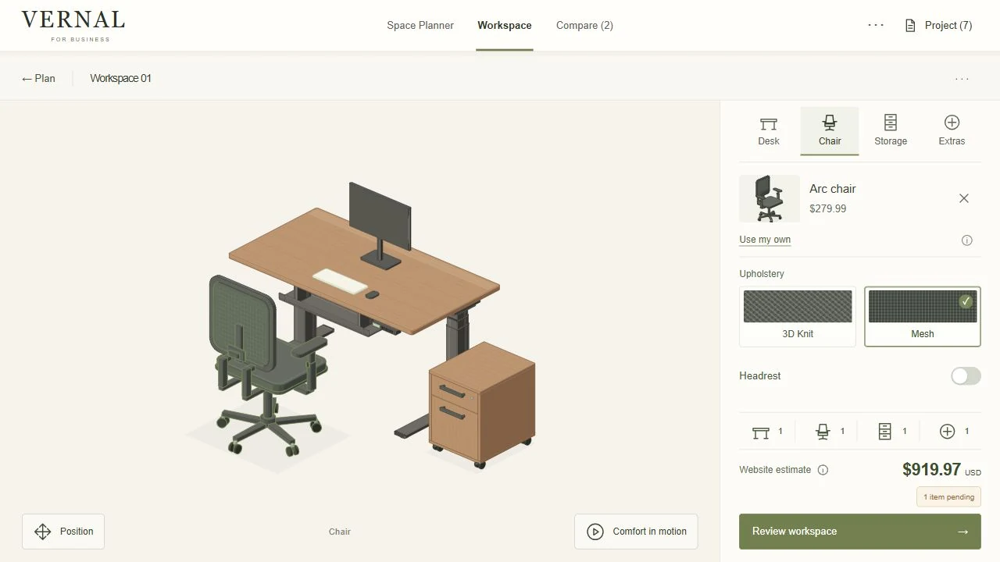
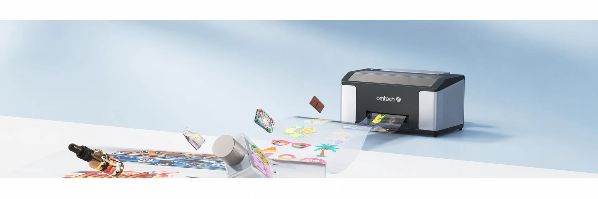
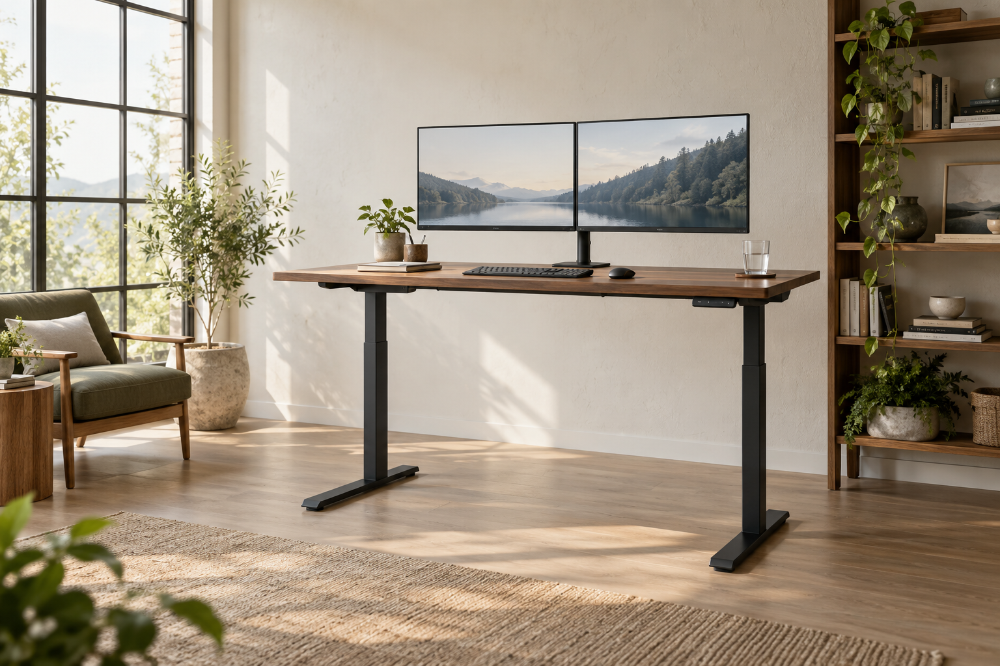

B2B 选型工具 · 可运行原型
Vernal
Office Studio
从办公布局，到清晰的采购需求。
调整空间、放置桌子，用结构动画理解产品，再选择型号与配件。让布局、配置和采购清单围绕同一个项目衔接。
体验办公空间规划器v5.1 · 方案保存在当前浏览器
询价包支持本地下载，正式价格由销售确认。
CASE STUDIES
从产品故事到交互体验，看看想法如何成为完整页面。

B2B 选型工具 · 可运行原型
从办公布局，到清晰的采购需求。
调整空间、放置桌子，用结构动画理解产品，再选择型号与配件。让布局、配置和采购清单围绕同一个项目衔接。
体验办公空间规划器v5.1 · 方案保存在当前浏览器
询价包支持本地下载，正式价格由销售确认。

产品页面 · 内容与交互
让水晶标的可能性，变得看得见。
围绕打印、转印与定制应用，串联真实素材、软件流程和产品细节，构建完整的产品浏览体验。
查看完整页面页面归档 · 保留主要展示与交互

首页设计 · 交互原型
从一张桌子开始，构建理想工作空间。
通过选桌问答、空间规划、材质切换与工作区搭配，把产品探索连接到个人化的配置体验。
探索交互页面Room to Grow · 设计概念与本地配置体验